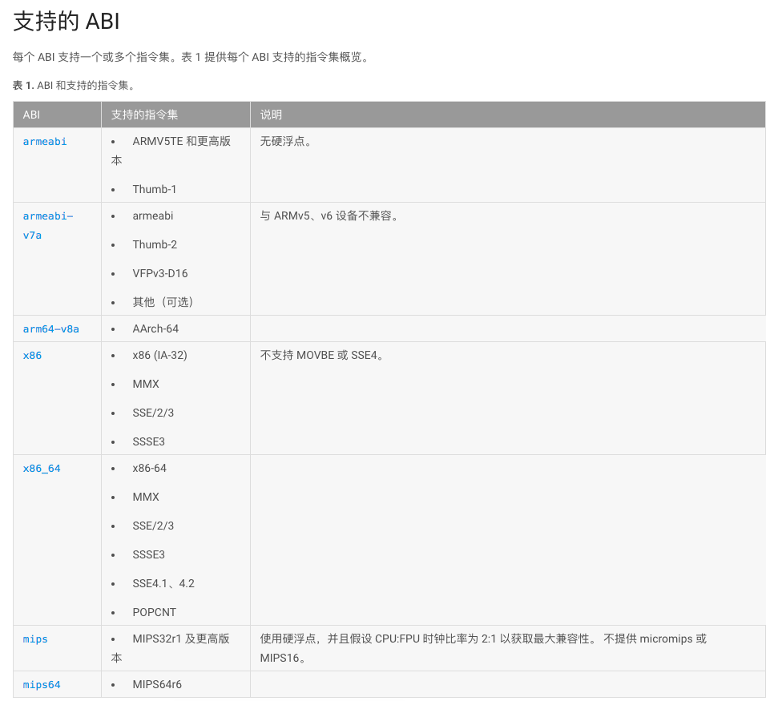
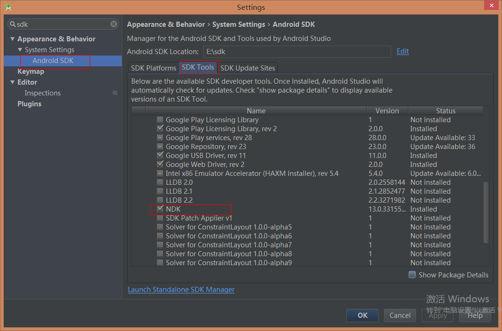
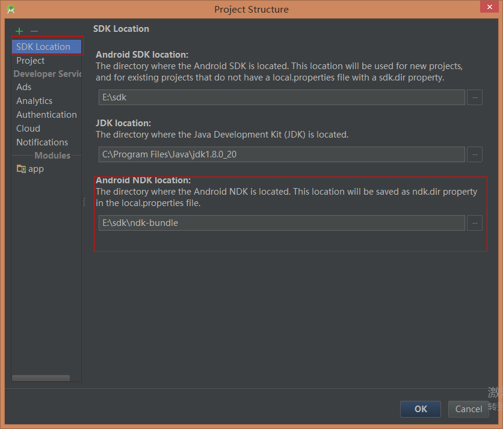
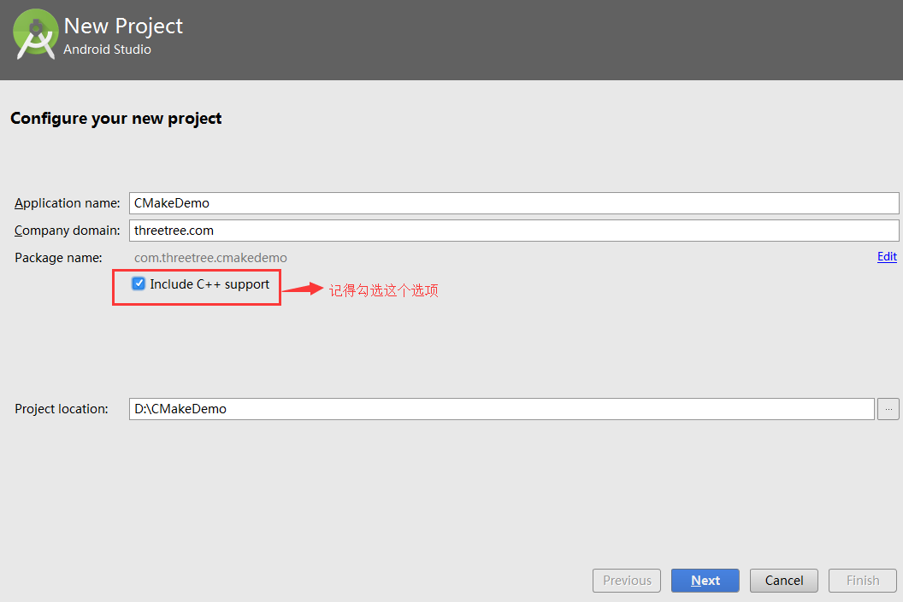
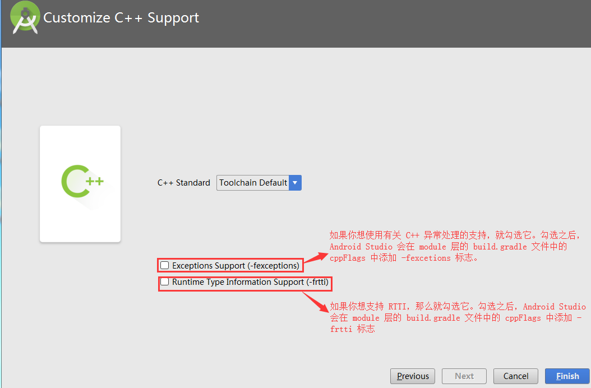

一些简单的说明：
JNI（Java Native Interface）：Java本地接口。是为了方便Java调用c、c++等本地代码所封装的一层接口（也是一个标准）。
NDK（Native Development Kit） : 原生开发工具包，即帮助开发原生代码的一系列工具，包括但不限于编译工具、一些公共库、开发IDE等。
CMake:脱离 Android 开发来看，c/c++ 的编译文件在不同平台是不一样的。
Unix 下会使用 makefile 文件编译，Windows 下会使用 project 文件编译。
而 CMake 则是一个跨平台的编译工具，它并不会直接编译出对象，
而是根据自定义的语言规则（CMakeLists.txt）生成对应 makefile 或 project 文件，然后再调用底层的编译。
在Android Studio 2.2 之后，工具中增加了CMake的支持，
你可以这么认为，在 Android Studio 2.2 之后你有2种选择来编译你写的 c/c++ 代码。
一个是 ndk-build + Android.mk + Application.mk 组合，另一个是 CMake + CMakeLists.txt 组合。
这2个组合与Android代码和c/c++代码无关，只是不同的构建脚本和构建命令。
本篇文章主要会描述后者的组合。（也是Android现在主推的）
ABI（Application binary interface）应用程序二进制接口。
不同的CPU与指令集的每种组合都有定义的 ABI (应用程序二进制接口)，一段程序只有遵循这个接口规范才能在该 CPU 上运行，
所以同样的程序代码为了兼容多个不同的CPU，需要为不同的 ABI 构建不同的库文件。
当然对于CPU来说，不同的架构并不意味着一定互不兼容，如下图：

NDK配置
下载NDK

配置NDK路径

配置NDK环境变量
程序员都懂
设置as
将ndk版本差异检测过滤掉，要不然项目无法编译。添加：android.useDeprecatedNdk=true
编写代码
创建项目


编写调用c的java代码
注意：这里如果方法名报错，不用管他。
生成调用本地方法的.h头文件
用as自带的Terminal工具来生成。
命令：
进入你项目的java文件夹下
cd app/src/main/java
com.lh.jni是你的完整包名，后面跟具体写有调用c代码的java类
javah -jni com.lh.jni.JniKit
未完待续